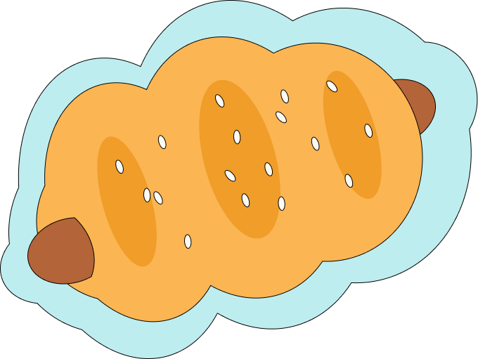

8 small sausages (e.g., cocktail sausages or Chinese-style sausages)
1 egg (beaten, for egg wash)
sesame seeds (optional)

Sausage Bun (Cheung Zai Bao)
instructions
In a large mixing bowl, combine bread flour, sugar, salt, and instant yeast. Mix well.
Add the egg and warm milk. Mix until a rough dough forms.
Once the beans are soft, drain any excess water.
Add the softened butter and knead the dough until it becomes smooth and elastic, about 8–10 minutes by hand or 5 minutes using a stand mixer with a dough hook.
Shape the dough into a ball and place it in a greased bowl. Cover with a damp cloth or plastic wrap.
Let it rise in a warm place until it doubles in size, about 1–1.5 hours.
If using Chinese-style sausages, steam them for about 5 minutes to soften. Let them cool before using.
Punch down the dough to release air and divide it into 8 equal portions. Shape each piece into a ball.
Roll each ball into a small oval or rectangle. Place a sausage on one end, and roll the dough tightly around the sausage, sealing the edges.
Place the shaped buns seam-side down on a baking sheet lined with parchment paper.
Cover the buns with a damp cloth or plastic wrap and let them rise for another 30–40 minutes until puffy.
Preheat the oven to 375°F (190°C). Brush the buns with beaten egg for a shiny finish. Sprinkle sesame seeds on top if desired.
Bake in the preheated oven for 15–18 minutes, or until golden brown.